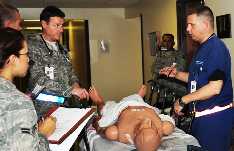

Scenario Development:
Your Quick Guide to ISD
Session
As you conduct the simulation session, make sure you:
- Are strategic in your facilitation approach. Guided facilitation allows for a lot of interaction between you and students whereas observation limits interaction between you and students. Choose the facilitation approach most appropriate for your scenario. For instance, if you’re facilitating a low-risk simulation for student development, then guided facilitation may be most appropriate.
- Don’t provide unscripted or extra cues to help students achieve the learning objectives unless those cues are part of the scenario. This allows students to drive the learning process.



Close panel
Analysis
- Analysis
- Critical Tasks
- Outputs
Design
- Design
- Critical Tasks
- High- & Low-Risk Simulations
- Learning Domains
- Effective Learning Objectives
- Ouputs
Development
- Development
- Critical Tasks
- Principles of Experiential Learning
- Principles of Adult Learning
- Outputs
Implmentation
- Implementation
- Critical Tasks
- Delivery of the Scenario Flow
- Outputs
Evaluation
- Evaluation
- Critical Tasks
- Four Levels of Evaluation
- Methods
- Performance Measures
- Outputs
FAQs
- Beginning a New Scenario
- Measuring Effectiveness
- Documentation Format
- Resources